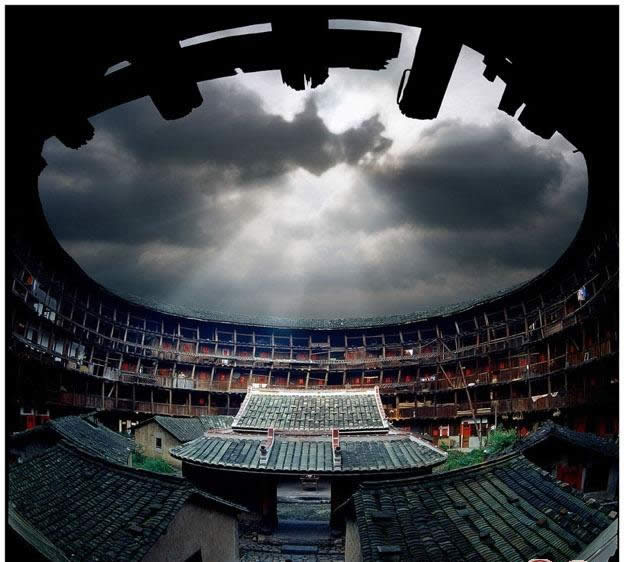

和昌楼楼道相对云水谣镇的和贵楼，明显要干净得多，灰尘很少，可能是因为和昌楼还比较新吧。
外栏杆皆用木板封实，上面随意挂着的藤筐、斗笠、干豆角（不知是否可以这么称呼），个个鲜活得像精美的艺术品，可惜雨天，若是阳光灿烂的日子，呆在和昌楼拍小景，都能美美拍上大半天。
清晨六时，黑咕咙咚开门出去，脚下碰到什么，是盛满沙田柚的大箩筐，谁家这么不小心，东西都忘收了。转游一圈归来，方知这非不小心。楼道里，随意摆放着各家商品。小孩起得很早，正从锅里拿着什么，一旁是她家的商品：红樱枪玩具、雨伞、柿子饼、装满物品的肥料蛇皮袋、乐彩胶水桶。如此种种，似乎在传递着这样一个信息：这里民风很朴实、这里治安还不错。
说起和昌楼，不得不提一个年轻人，小伙子姓黄，大伙叫他小辉。南靖两日土楼游，便是他安排的。小辉在网上开通了网站，不少游客都是搜索到他、看过游客评论后，预定房间和游览路线。小伙子一家人都很实在，从村口接到我们开始，话不多、总在为大家忙碌。
|  |
这日，武汉一对夫妻、天津一家四口、五个北京游客，组成临时旅行团，跟着导游冒雨参观云水谣、和贵楼。团员人人友善、欢声笑语不断。傍晚，回到和昌楼，小辉妈妈已做好晚餐，每人十五元：满满一大锅土鸡汤，有鱼、有肉、有新鲜蔬菜。餐后，小辉为大家播放了一个田螺坑的电视短片。这是小辉家的“嘟嘟”，一个无比温顺、却又精力无比充沛的家伙。
就在嘟嘟拴着铁链、拖着石墩满地打滚这会儿，那边，几只小鸡不知道为什么打起来了。怎的就想起了远在北京的“小鸡小”。小鸡小还是毛绒绒的鸡仔时，光荣成为蜜女儿的宠物，独自生活在东郊别墅里。每隔两三天，蜜要奉命去喂鸡。某日同往，得知小鸡小就在鞋柜前小纸箱里，瞅了眼，还小鸡小，如此强壮。
整日呆在那个狭小空间里，不会抑郁吗？蜜指着花园的大木箱：那是我爸给她做的鸡笼，开春就可住那了。女儿跟要好的同学都许诺出去了，小鸡小孵出小鸡后，每人一只。忽然，楼下传来一阵悲壮的喔喔喔的声音，分明是鸡叫声，小鸡小原来是只公鸡！蜜郁闷得不行：养了这么久，头回听到它打鸣。相比，还是有架打、有虫吃、想去哪就去哪的小鸡幸福。